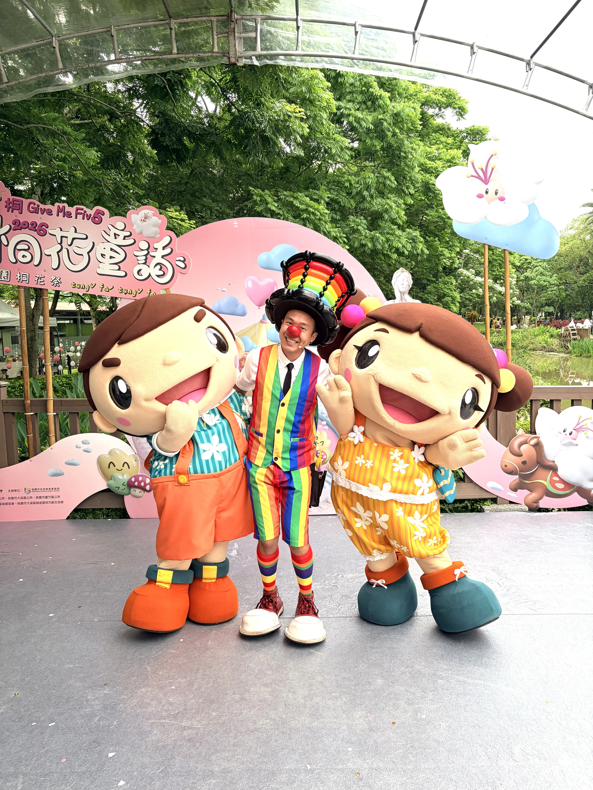
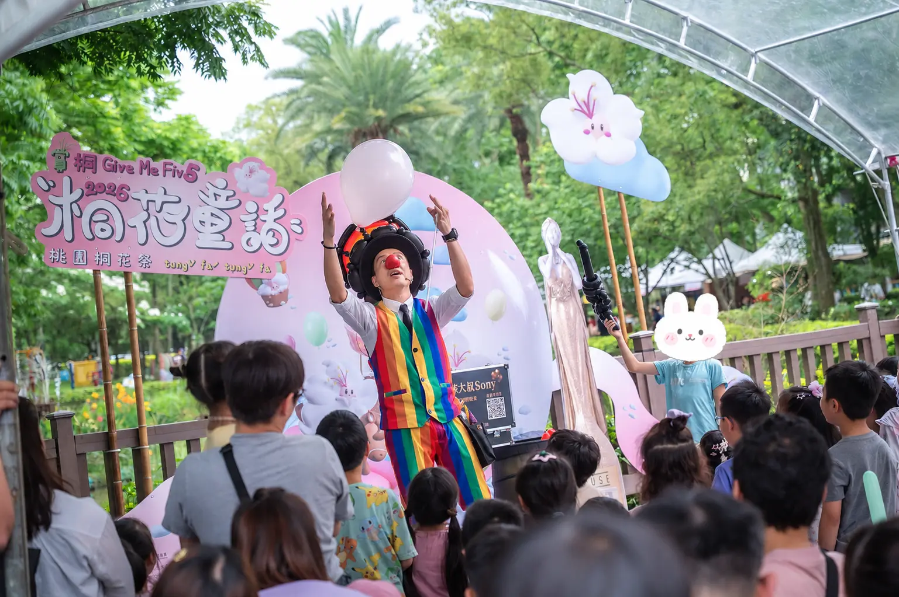
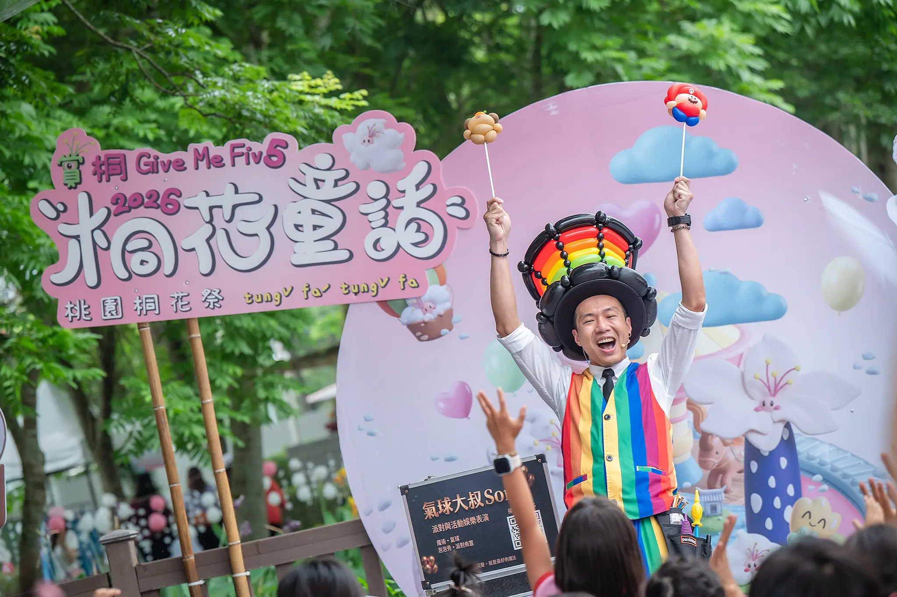
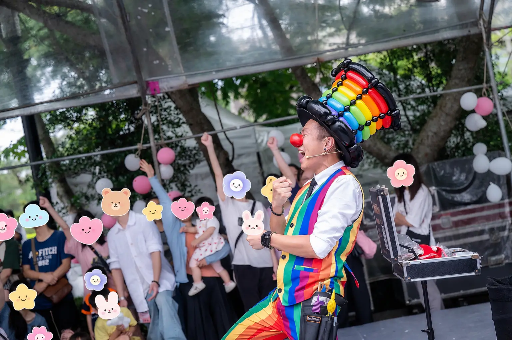
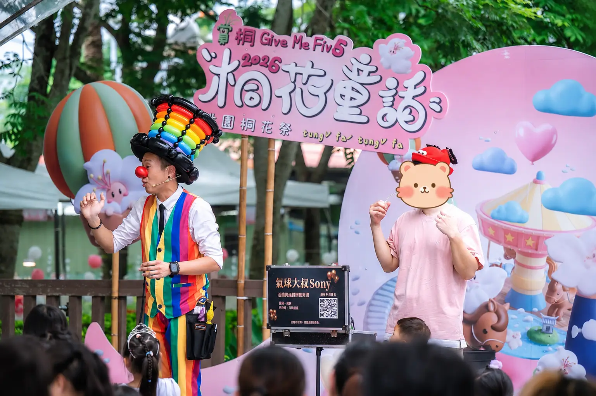

2026 桃園桐花祭活動演出案例｜客家文化館舞台氣球魔術互動秀
與客家吉祥物同台綻放歡笑！氣球大叔 Sony 打造人潮引爆的春日桐花童話現場
| 📊 2026 桃園桐花祭活動演出摘要 | |
|---|---|
| 活動日期 | 2026 年 4 月 18 日 |
| 活動地點 | 桃園市龍潭區桃園客家文化館（中正路三林段500號） |
| 核心表演 | 舞台氣球魔術互動秀、親子家庭舞台帶動 |
| 現場亮點 | 與桃園客家代言人吉祥物「阿弟、阿妹」同台互動、全場家長與小朋友高舉雙手熱烈參與 |
| 演出者 | 氣球大叔 Sony 團隊 |
2026 年 4 月 18 日，正是桐花盛開的浪漫季節，氣球大叔 Sony 團隊受邀來到 桃園客家文化館，參與年度盛事 「2026 桃園桐花祭 - 桐花童話」 的舞台現場演出。當天的客家文化館不僅僅充滿了美麗的雪白桐花意象，更因為充滿了孩子們的尖叫聲與家長們的掌聲，變得格外有活力！對我們來說，能在這麼美麗的文化場域裡，透過舞台氣球魔術互動將歡樂帶給現場親子家庭，對我們來說就是非常珍貴的演出經驗。

驚喜同台！當氣球大叔遇上客家吉祥物阿弟、阿妹
活動一開場，氣球大叔 Sony 便與桃園客家文化館的最萌代言人——吉祥物 阿弟、阿妹 同台亮相！看見頂著招牌紅鼻子、穿著繽紛彩虹背心、頭戴巨型彩虹氣球高帽的大叔，與穿著客家花布衣裳的阿弟、阿妹站在一起，台下的小朋友們立刻被舞台氣氛吸引。這樣的開場設計不僅完美融合了在地的客家文化元素，更瞬間拉近了舞台與台下觀眾的距離，為整場 桃園親子活動表演 定下了充滿童趣與熱情的好基調。

這類氣球魔術互動秀適合哪些活動？
一場成功的舞台表演，必須能精準滿足主辦單位與觀眾的搜尋意圖。氣球大叔 Sony 的 舞台氣球魔術互動秀 具備極強的場域適應力，非常適合以下活動場景規劃：
- 地方政府大型節慶：如桐花祭、花彩節、燈會舞台，需要高吸睛度、快速聚集人潮的表演。
- 文創園區與觀光工廠：如客家文化館、各式主題園區，用互動秀吸引親子客群停留，帶動周邊市集消費。
- 企業家庭日與尾牙派對：為科技大廠、企業同仁及其眷屬量身打造不分年齡層皆能開懷大笑的減壓互動演出。
- 校園與幼兒園慶典：畢業典禮、兒童節派對，最受小朋友歡迎的絕對指標。

氣球大叔 Sony 的舞台互動秀包含哪些內容？
為了讓搜尋引擎與準備辦活動的您更了解我們的服務細節，我們將舞台互動秀的核心內容標準化：
| 服務項目 | 服務具體內容與特色 |
|---|---|
| 幽默魔術互動 | 非傳統枯燥的高台魔術，而是著重於與台下大朋友、小朋友對話，讓觀眾成為魔術的一部分。 |
| 頂級卡通造型氣球 | 現場快速編織高難度的精緻卡通角色（如經典電玩瑪利歐、可愛動物），送給最投入的幸運觀眾。 |
| 全場氣氛節奏掌控 | 配備專業無線耳麥與精選音樂襯托，具備多場大型節慶、親子活動與戶外舞台演出經驗，能依現場人流與觀眾反應調整節奏。 |

互動熱烈！家長集體舉手共創的溫馨時刻
在當天的演出中，氣球大叔 Sony 祭出了多個精彩的互動橋段。當大叔高舉雙手、拋接起神祕的巨大氣球時，台下所有人的眼睛都亮了；而當進行到全場互動的最高潮時，不只是最前排的孩子們興奮地跳了起來，就連後方原本站著用手機紀錄的 家長們也集體高舉雙手、跟著大叔的拍子熱情參與、一起互動！ 看著大家臉上毫無保留的真摯笑容，這正是「桐花童話」最美的一幕。好的表演，就是能讓大人放開平時的壓力、讓大人小孩都投入其中！

🏆 為什麼大型政府節慶與企業指名選擇「氣球大叔 Sony」？（E-E-A-T 品牌實力）
- 絕對的安全性與親和力：堅持使用進口高品質無毒乳膠氣球，表演風格健康幽默，深獲家長與公部門信賴。
- 強大的吸睛效果：特製的彩虹舞台裝與吸睛的小丑紅鼻子造型，光是站著就是全場焦點，更是合照的熱門巨星。
- 豐富的突發狀況經驗：戶外演出常有風大、高溫等天候影響，大叔具備豐富的戶外節慶控場經驗，能隨時靈活微調內容，確保活動圓滿成功。
案例總結：讓每一次的桐花季，都變成最美好的童話故事
這次在 2026 桃園桐花祭 的演出，不論是跟桃園客家代言人阿弟、阿妹的驚喜合照，還是看見台下幾百隻高舉的手，都讓我們深深感受到桃園鄉親的無比熱情。我們相信，活動的主角永遠是台下的每一位觀眾，氣球與魔術只是媒介，最珍貴的是現場流動的愛與陪伴。謝謝主辦單位的肯定，我們下次舞台見！
💡 桃園客家文化館活動演出常見問題
- Q: 桃園客家文化館或大型節慶適合規劃什麼樣的舞台演出？
- A: 大型文創園區或戶外節慶（如桃園桐花祭）強烈建議安排結合「氣球」與「魔術」的雙核心親子互動秀。這種表演能快速吸引路過的大量人潮停下腳步，且透過舞台上的幽默互動，能讓孩子與家長都極具參與感，有效延長遊客在園區的停留時間。
- Q: 氣球大叔 Sony 的舞台互動表演內容包含哪些元素？
- A: 氣球大叔 Sony 的演出包含高難度的精緻卡通造型氣球編織、驚奇的近距離魔術與大型舞台帶動。我們不只提供視覺上的表演，更著重於「全場互動」，會邀請台下大朋友、小朋友上台共同參與，甚至與現場的吉祥物完美搭配，打造歡呼聲不斷的熱烈氣氛。
- Q: 如何聯繫氣球大叔 Sony 預約桃園或新竹等北部地區的活動表演？
- A: 您可以直接點擊網頁下方的「預約氣球大叔演出」按鈕，或是前往聯絡我們頁面填寫線上預約表單。請提供您的活動日期、場地性質（如戶外節慶、室內尾牙、家庭日）、預估觀眾年齡層，大叔會為您量身規劃最有溫度的互動秀方案。
- Q: 桃園親子氣球魔術互動秀費用大約怎麼估？
- A: 費用會依照演出時間、活動地點、舞台規模、是否搭配造型氣球或音響設備而有所不同。若是桃園、龍潭、中壢、新竹等北部地區活動，可依照活動形式提供合適的演出方案。
- Q: 戶外節慶活動安排氣球魔術互動秀需要準備什麼？
- A: 建議主辦單位確認舞台區域、觀眾動線、遮陽避雨、電源與音響設備。若活動場地為戶外廣場、文化館、市集或花季活動，也可以依人流狀況安排更容易聚集觀眾的互動橋段。
🎈 正在規劃桃園、新竹的親子活動或節慶舞台演出嗎？
若您正在尋找能引爆現場人潮、讓大人小孩都投入其中的 桃園活動表演、龍潭親子互動秀、公部門大型舞台表演、文創園區造勢、企業家庭日魔術演出，氣球大叔 Sony 團隊可依照活動規模、觀眾年齡層與場地條件，協助規劃合適的舞台互動演出內容。
- 核心服務傳送門：歡迎參考我們的 精采魔術互動秀服務 頁面。
- 造型設計傳送門：想要更繽紛的視覺？快去看看 頂級造型氣球與會場佈置服務。
- 專人提前卡位：熱門節慶與假日檔期極易客滿，歡迎提前與我們討論場地、日期與預算需求。
📅 本文紀錄於 2026-04-18，由氣球大叔 Sony 團隊親自撰寫分享桃園客家文化館精彩演出案例。